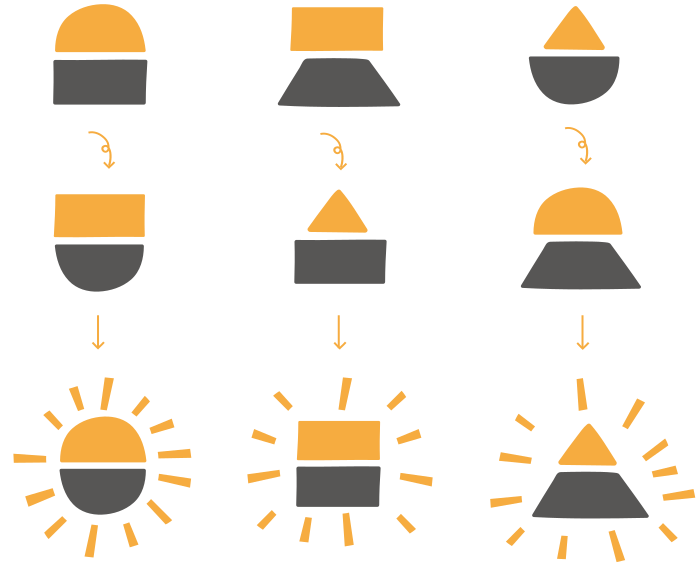
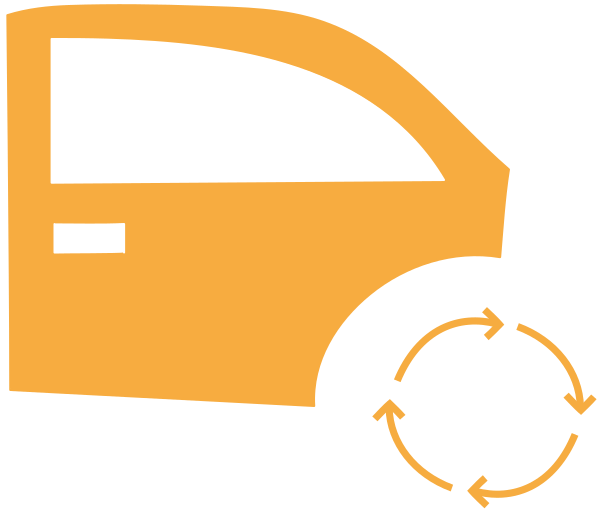
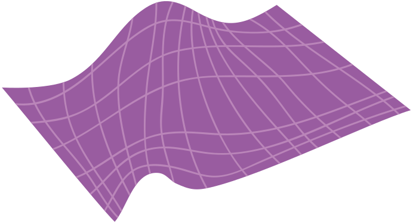

AZ had over 200 million documents. Printed out on paper, that would weigh more than the Titanic.
They used over 100 different applications to search them all. That meant over 100 passwords, interfaces and systems to learn and no common way to collate results.
So we built a simple search portal - providing universal access to all the documents through one application.
The app works on phones, tablets and PCs and requires no training to use.
And simplifying search at AZ came in the nick of time because every month 417,000 new documents are added, enough to wallpaper the pyramids every two days.
AZ used to run innovation competitions for new ideas, but they suffered from a relatively low level of participation.
The ideas were always submitted as lengthy academic documents which limited the number of people capable of suggesting or appraising ideas.
So they missed out on the collective brainpower available.
So with them we developed a collaborative innovation tool, creating a place where new ideas can be captured, shared and appraised anytime, anywhere by anyone.
Ideas start out as 140 character chunks. The crowd vote on the most attractive and only those selected by the crowd are developed any further.
All participants get rewarded for being involved. This gets more people than ever from within the organisation involved in innovation.
Ideas are improved by wider collaboration into more rounded concepts, making the real-world application of the ideas more likely.
Cars are being written off by insurers because they replace old parts with new ones.
Old parts are not used because they are hard to source and they are not catalogued in the same way as new parts.
A car which is not viable for repair with new parts could be if old parts were available.
On average insurers are overpaying by £300* [Competition Commission] for their repairs, driving up insurance premiums.
By always using new parts the industry pays around £44M extra for accident repair each year.
We have created a system that matches the immediate needs of repairers to a live database of secondhand parts.
The system lets repairers get instant quotes for parts which they order for immediate delivery.
This means insurers avoid costly write offs, there is more work for repairers and breakers, and ultimately this improved market for secondhand parts is better for the environment and should help reduce insurance premiums.
Formerly our client used to invent and market games for itself and its customers using industry standard gaming platforms. But they were never satisfied with the quality of the service or the software they were buying in.
They decided to start from scratch by building their own software platform to deliver industry leading technology and games, while also integrating best of breed games from other content providers.

Using pebble {code} and its skills and expertise to bolster their in-house software team, they have built a highly flexible online gaming platform, giving their customers and gamers the freedom to adapt their products and the ability to play them on any device.
